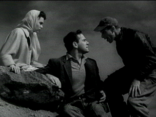

| It Came From Outer Space (SE)/ B, B+ |
| Universal/1953/81/FS 1.33/BW |
The sappy romantic thread that opens the film is
happily short-lived. Thank heaven's for that! A roar and a flash in the
desert night sky diverts astronomer John Putnam's attention from the
pretty Ellen Fields at his side, and it's off to investigate.
When Putnam discovers that what he thought was a giant
meteor is actually a space ship, nobody wants to believe him. But, strange
things start to happen around the small town. A few people wonder about in
zombie-like trances. It doesn't take John long to figure out that the
Aliens are on the loose. He must convince the Sheriff, who fancies John's
girl, that something very real is going on.
 |
|
I did see them, I did! ©Universal
|
It Came From Outer Space was one of the
first 3-D productions. Watching the way the nasty projectile from space is
filmed lets you imagine how it popped off the theater screen in 3-D almost
fifty years ago. You also might enjoy pondering how the recent film Evolution
took many of its plot points directly from It Came From Outer Space.
There are some nice cheesy horror effects depicting the gelatinous aliens
and some heavy duty eerie music accompanies their every appearance. Don't
try to hum the theme music.
The action unfolds with snappy efficiency. Director Jack
Arnold (Creature From the Black Lagoon) moves the story along
efficiently from section to section as the tale unfolds to a simple
conclusion.
Ray Bradbury gets story credit. It's a good
little script. You might have read a story like this in one of the scifi
magazines of the period, or it might even have been based on one of those
eye-witness sightings of space ships that were prominent in those days.
The story bears significant resemblance to Invasion of the Body
Snatchers, which this predates by several years. I've never
noticed a communist paranoia thread run through a movie as overtly as it
does here.
Richard Carlson plays John Putnam within his acting
range, serious and determined to save the day and the girl. Charles Drake
is somewhat stiff as Sheriff Warren, and Barbara Rush is along to provide
someone who looks good in a dress.
Excellent source elements have been preserved
from the Universal library. The black and white film looks almost fresh
enough to have been made yesterday. Black levels are excellent. The DVD
consistently exhibits a very nice gray scale range. The image is stable
and detail is finely resolved. Shadows are revealing. Good, tight, fine
grain pattern replicates the feeling of film. There a few minor
specs of dirt. The mono sound is very clear with no sign of hiss and only
a couple of minor instances of scratchiness.
Universal delivers It Came From Outer Space armed
with special edition powers. Film historian Tom Weaver provides
audio commentary. A half-hour documentary is sort of a promo for Universal
films, but it does give a glimpse into attitudes and the times when the
film was made. There's also a photo and poster gallery, production notes
and a theatrical trailer. |
|
|
|

Selections from the Feature
Archive include articles on Akira Kurosawa, Blonde Bimbos, Frank Darabont, Steven Culp, John Herzfeld or Vietnam: The Hollywood Pariah, and many
more....
Nobody's
Perfect

Billy Wilder left movie lovers a legacy of cinematic treasure. From
defining Film Noir to outrageous comedy, writer/director Wilder delivered
the goods with consummate style.

Starship Troopers/A-,A

A great, modern, war movie that skewers genre conventions. Director
Paul Verhoeven controls the Scifi flick with a perfect flight plan.


Buddhacon
features a wide range of reviews from DVDs, first-run movies to
top-selling albums. Editorials, features and more. User comments appended.

ISF Monitor
Calibrations in the Tristate New York area. Lots of hardware
info and frequent hardware peaks from video expert Kevin Miller. They may
be judgmental, but that's the point, isn't it. Lots of DVD reviews plus
news and more.
The Cinematheque is a cultural,
arts organization that programs year-round specialty film series at the
newly renovated, landmark 1922 Egyptian Theatre on
Hollywood Boulevard!
|